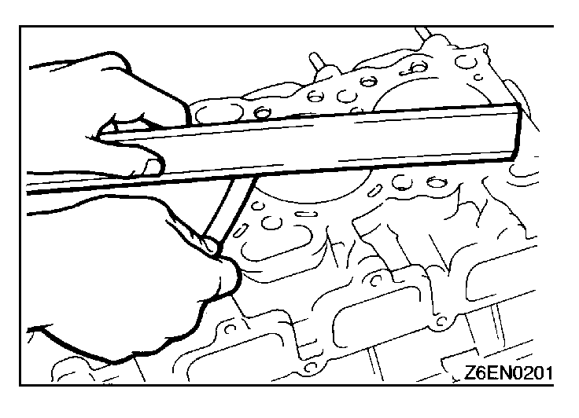
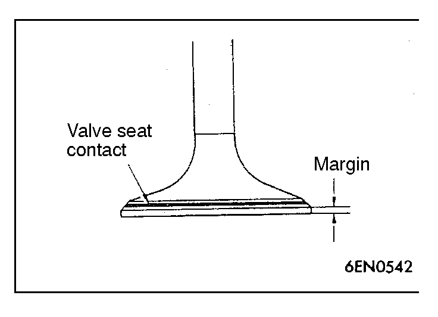
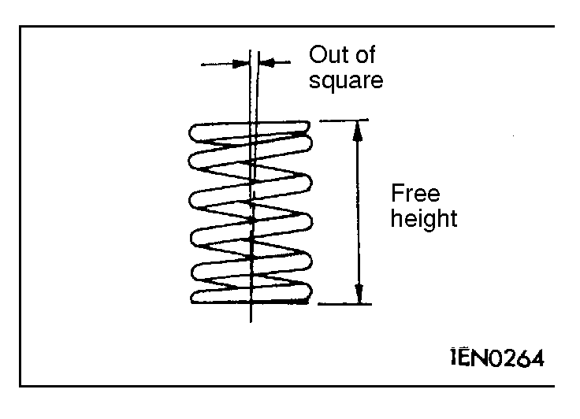
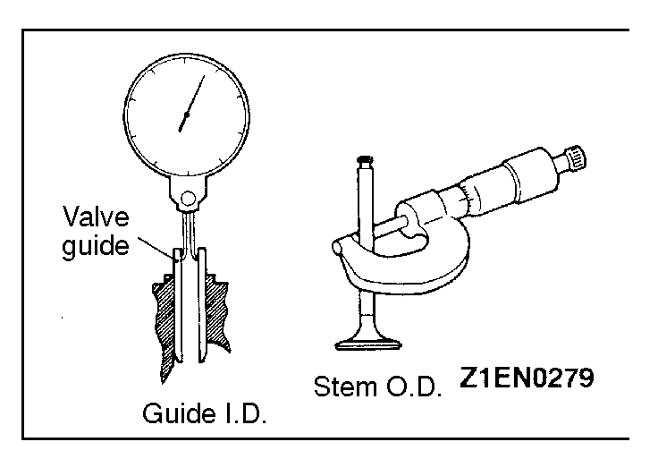
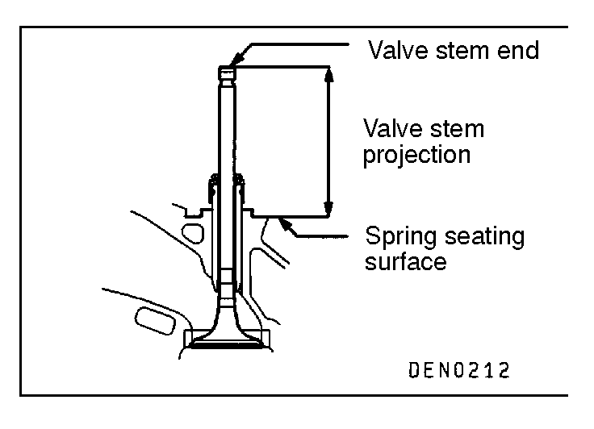
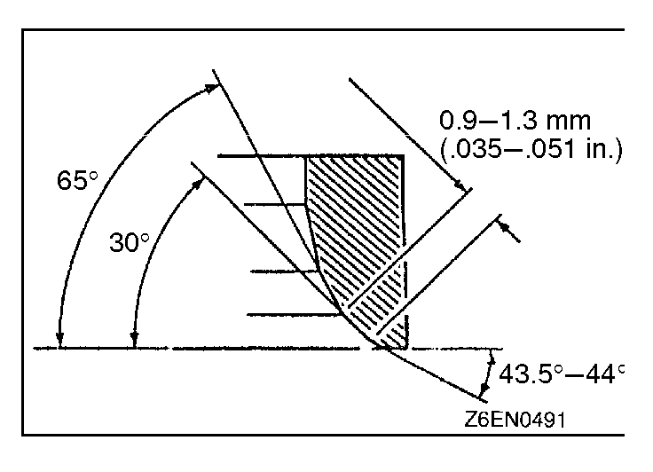
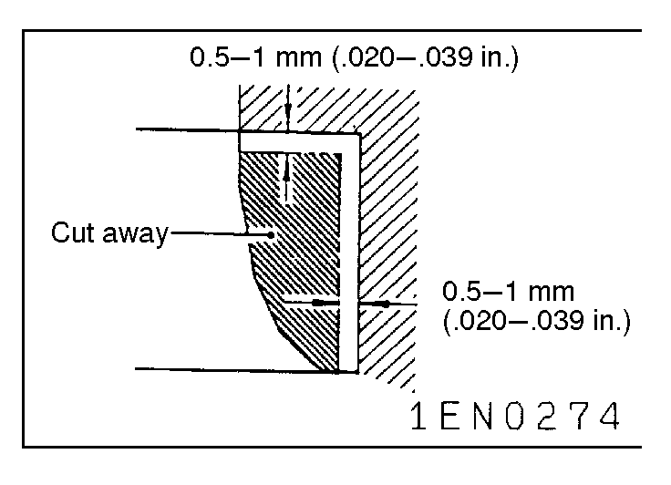
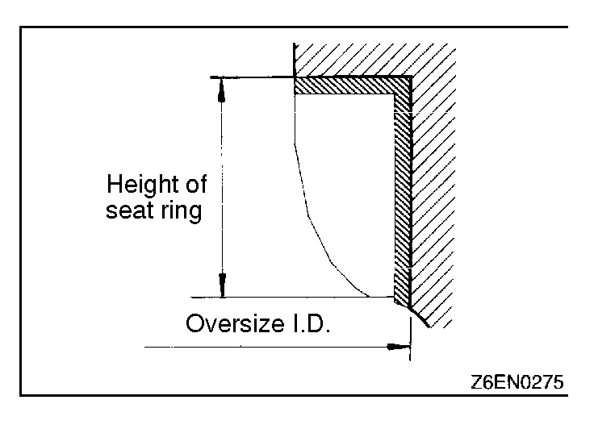
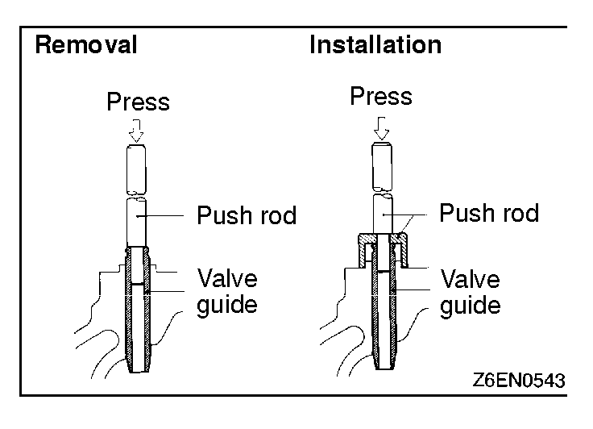
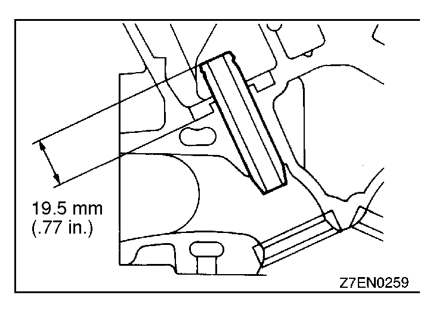

|

|
INSPECTION
CYLINDER HEAD
(1)Check the cylinder head gasket surface for flatness by using a straightedge and feeler gauge.
Standard value: 0.05 mm (.0020 in.)
Limit: 0.2 mm (.008 in.)
(2)If the service limit is exceeded, correct to meet specification.
Grinding limit: *0.2 mm (.008 in.)
* Includes combined with cylinder block grinding.
Cylinder head height (Specification when new):
131.9 - 132.1 mm (5.193 - 5.201 in.) |
|

|
VALVE
(1)Check the valve face for correct contact. If incorrect, reface using valve refacer. Valve seat contact should be maintained uniform at the center of valve face.
(2)If the margin exceeds the service limit, replace the valve.
| Item |
Standard value
mm (in.) |
Limit
mm (in.) |
Identification
mark |
| Intake |
1.0 (.039) |
0.5 (.020) |
6T |
| Exhaust |
1.5 (.059) |
1.0 (.039) |
6T |
|
(3)Measure the valve's total length. If the measurement is less than specified, replace the valve.
| Item |
Standard value
mm (in.) |
Limit
mm (in.) |
| Intake |
109.50 (4.3110) |
109.00 (4.2913) |
| Exhaust |
109.70 (4.3189) |
109.20 (4.2992) |
|
|
|

|
VALVE SPRING
(1)Measure the free height of spring and, if it is smaller than the limit, replace.
Standard value: 47.0 mm (1.850 in.)
Limit: 46.0 mm (1.811 in.) |
|
|
(2)Measure the squareness of the spring and, if the limit is exceeded, replace.
Standard value: 1.5° or less
Limit: Max. 4° |
|

|
VALVE GUIDE
(1)Measure the clearance between the valve guide and valve stem. If the limit is exceeded, replace the valve guide or valve, or both.
| Item |
Standard value mm (in.) |
Limit mm (in.) |
| Intake |
0.02 - 0.05
(.0008 - .0020) |
0.10 (.004) |
| Exhaust |
0.05 - 0.09
(.0020 - .0035) |
0.15 (.006) |
|
|
|

|
VALVE SEAT
(1)Assemble the valve, then measure the valve stem projection between the end of the valve stem and the spring seating surface. If the measurement exceeds the specified limit, replace the valve seat.
| Item |
Standard value mm
(in.) |
Limit mm (in.) |
| Intake |
49.20 (1.9370) |
49.80 (1.9606) |
| Exhaust |
48.40 (1.9055) |
48.90 (1.9252) |
|
|
|

|
VALVE SEAT RECONDITIONING PROCEDURE
(1)Before correcting the valve seat, check for clearance between the valve guide and valve and, if necessary, replace the valve guide.
(2)Using the seat grinder, correct to obtain the specified seat width and angle.
(3)After correcting the valve seat, lap the valve and valve seat using lapping compound. Then, check the valve stem projection (refer to VALVE SEAT in INSPECTION). |
|

|
VALVE SEAT REPLACEMENT PROCEDURE
(1)Cut the valve seat to be replaced form the inside to thin the wall thickness. Then, remove the valve seat. |
|

|
(2)Rebore the valve seat hole in the cylinder head to a selected oversize valve seat diameter.
Intake seat ring hole diameters
0.3 O.S.35.30 - 35.33 mm (1.3989 - 1.3909 in.)
0.6 O.S.35.60 - 35.63 mm (1.4016 - 1.4028 in.)
Exhaust seat ring hole diameters
0.3 O.S.33.30 - 33.33 mm (1.3110 - 1.3122 in.)
0.6 O.S.33.60 - 36.63 mm (1.3228 - 1.3240 in.)
(3)Before fitting the valve seat, either heat the cylinder head up to approximately 250°C (482°F) or cool the valve seat in liquid nitrogen, to prevent the cylinder head bore from galling.
(4)Using a valve seat cutter, correct the valve seat to the specified width and angle.
See "VALVE SEAT RECONDITIONING PROCEDURE". |
|


|
VALVE GUIDE REPLACEMENT PROCEDURE
(1)Using the press, remove the valve guide toward the cylinder block.
(2)Re-bore the valve guide hole of the cylinder head so that it may fit to the press-fitted oversize valve guide.
Caution
Do not install a valve guide of the same size again.
Valve guide hole diameters
0.05 O.S.12.05 - 12.07 mm (.4744 - .4752 in.)
0.25 O.S.12.25 - 12.27 mm (.4823 - .4831 in.)
0.50 O.S.12.50 - 12.52 mm (.4921 - .4929 in.)
(3)Press-fit the valve guide until it protrude 19.5 mm (.77 in.) from the cylinder head top surface as shown in the illustration.
NOTE
1.When press-fitting the valve guide, work from the cylinder head top surface.
2.Pay attention to the difference in length of the valve guides. [intake side: 45.5 mm (1.79 in.); exhaust side: 50.5 mm (1.99 in.)]
3.After installing the valve guides, insert new valves in them to check for sliding condition. |
|
![[Previous]](https://mitsubishitechinfo.com/data/F24S/BUTTONS/fprevg.png)
![[Next]](https://mitsubishitechinfo.com/data/F24S/BUTTONS/fnextg.png)